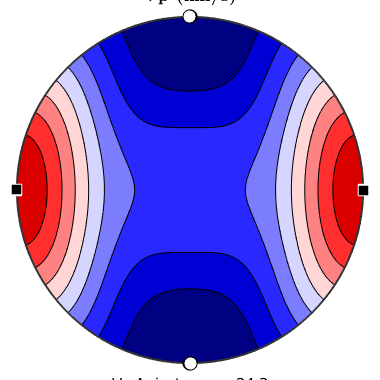
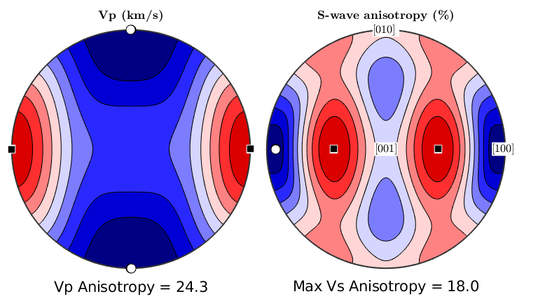
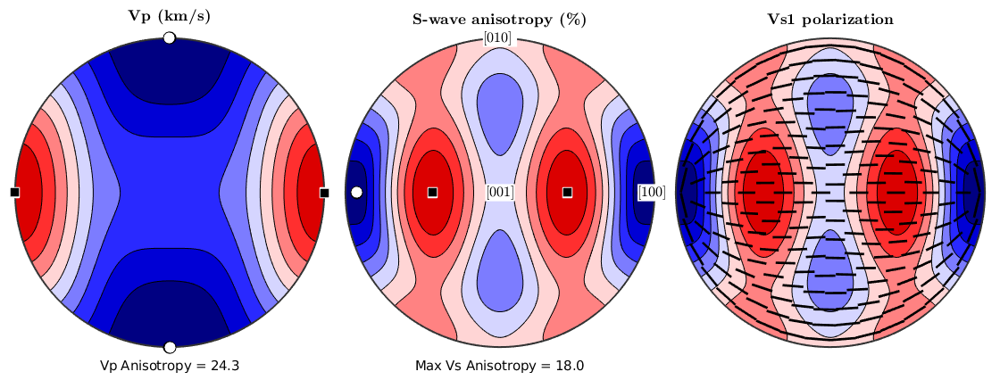
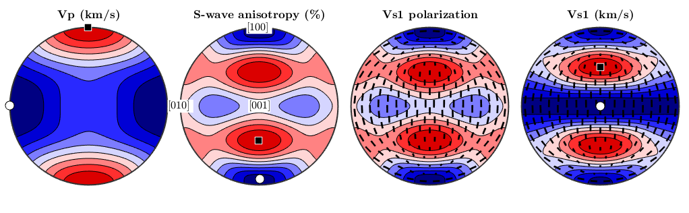
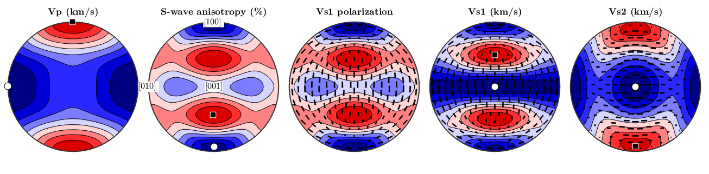
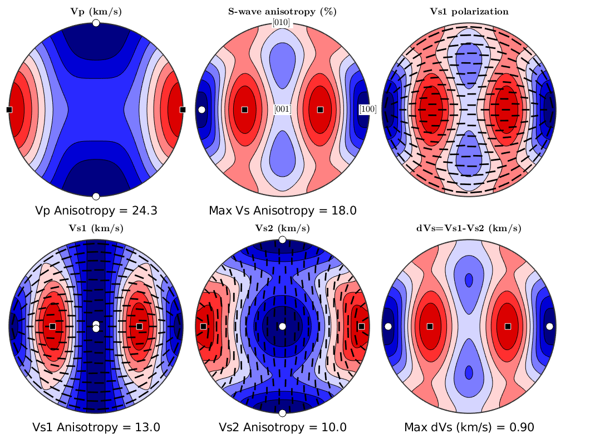
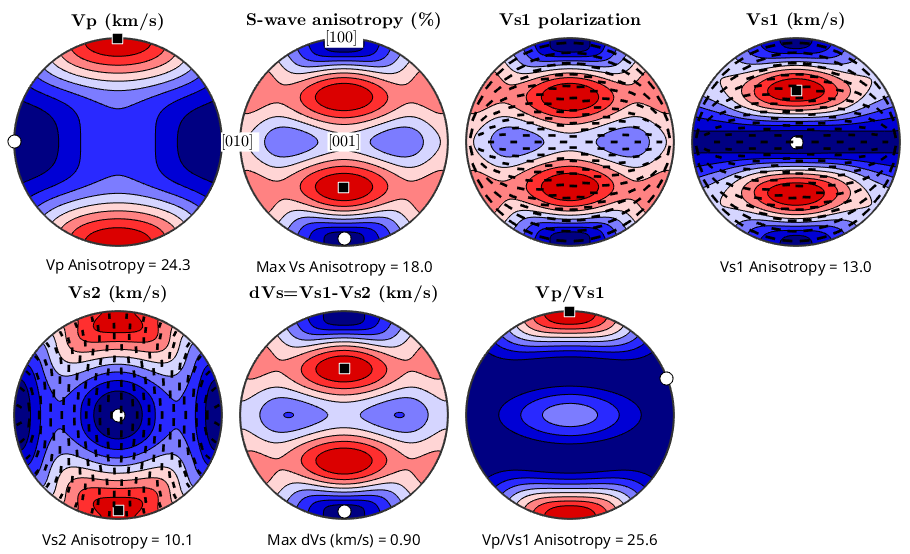
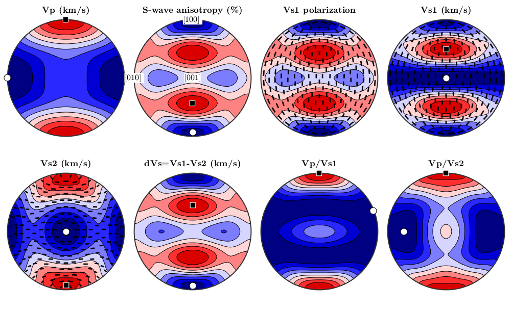
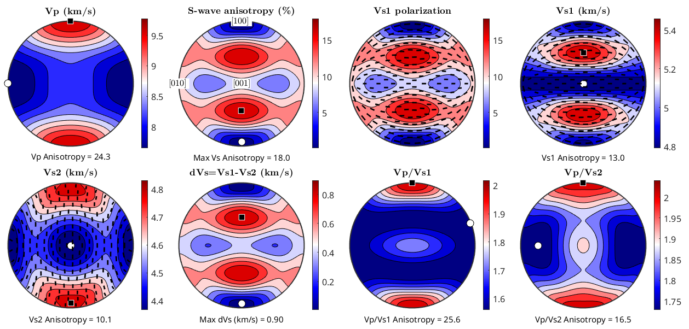

Calculating and plotting elastic velocities from elastic stiffness Cijkl tensor and density (by David Mainprice).
crystal symmetry - Orthorhombic mmm Olivine structure (4.7646 10.2296 5.9942 90.00 90.00 90.00) - Orthorhombic
cs_tensor = crystalSymmetry('mmm',[4.7646,10.2296,5.9942],... 'x||a','z||c','mineral','Olivine');
Import 4th rank tensor as 6 by 6 matrix
Olivine elastic stiffness (Cij) tensor in GPa Abramson E.H., Brown J.M., Slutsky L.J., and Zaug J.(1997) The elastic constants of San Carlos olivine to 17 GPa. Journal of Geophysical Research 102: 12253-12263.
Enter tensor as 6 by 6 matrix,M line by line.
M = [[320.5 68.15 71.6 0 0 0];... [ 68.15 196.5 76.8 0 0 0];... [ 71.6 76.8 233.5 0 0 0];... [ 0 0 0 64 0 0];... [ 0 0 0 0 77 0];... [ 0 0 0 0 0 78.7]]; % Define density (g/cm3) rho=3.355; % Define tenor object in MTEX % Cij -> Cijkl - elastic stiffness tensor C = tensor(M,cs_tensor,'name','elastic stiffness','unit','GPa','density',rho)
C = elastic stiffness tensor
unit : GPa
density: 3.355
rank : 4 (3 x 3 x 3 x 3)
mineral: Olivine (mmm)
tensor in Voigt matrix representation:
320.5 68.2 71.6 0 0 0
68.2 196.5 76.8 0 0 0
71.6 76.8 233.5 0 0 0
0 0 0 64 0 0
0 0 0 0 77 0
0 0 0 0 0 78.7
% Generate velocities and polarizations on a fine pole figure S2Grid XY_grid = equispacedS2Grid('upper', 'resolution',1*degree); [vp,vs1,vs2,pp,ps1,ps2] = velocity(C,XY_grid); %************************************************************************** % P-wave velocity (km/s) % Maximum and Minimum values and thier directions %************************************************************************** % Vp_max_value = max(vp); Vp_min_value = min(vp); % Anisotropy percent AVp=200*(Vp_max_value-Vp_min_value)/(Vp_max_value+Vp_min_value); % index values on S2Grid [~,index_max] = max(vp); [~,index_min] = min(vp); % vector in S2Grid Vp_max_vector = XY_grid(index_max); Vp_min_vector = XY_grid(index_min); %************************************************************************** % S-wave anisotropy percentage % defined as AVs = 200*(Vs1-Vs2)/(Vs1+Vs2) % Maximum and Minimum values and thier directions %************************************************************************** % new array AVs % avs = 200*(vs1-vs2)./(vs1+vs2); AVs_max_value = max(avs); AVs_min_value = min(avs); % index values on S2Grid [~,index_max] = max(avs); [~,index_min] = min(avs); % vector in S2Grid AVs_max_vector = XY_grid(index_max); AVs_min_vector = XY_grid(index_min); %************************************************************************** % dVs = Vs1-Vs2 (km/s) % Maximum and Minimum values and thier directions %************************************************************************** % new array AVs % dVs = vs1-vs2; dVs_max_value = max(dVs); dVs_min_value = min(dVs); % index values on S2Grid [~,index_max] = max(dVs); [~,index_min] = min(dVs); % vector in S2Grid dVs_max_vector = XY_grid(index_max); dVs_min_vector = XY_grid(index_min); %************************************************************************** % S1-wave velocity (km/s) % Maximum and Minimum values and thier directions %************************************************************************** Vs1_max_value = max(vs1); Vs1_min_value = min(vs1); % Anisotropy percent AVs1=200*(Vs1_max_value-Vs1_min_value)/(Vs1_max_value+Vs1_min_value); % index values on S2Grid [~,index_max] = max(vs1); [~,index_min] = min(vs1); % vector in S2Grid Vs1_max_vector = XY_grid(index_max); Vs1_min_vector = XY_grid(index_min); %************************************************************************** % S2-wave velocity (km/s) % Maximum and Minimum values and thier directions %************************************************************************** Vs2_max_value = max(vs2); Vs2_min_value = min(vs2); % Anisotropy percent AVs2=200*(Vs2_max_value-Vs2_min_value)/(Vs2_max_value+Vs2_min_value); % index values on S2Grid [~,index_max] = max(vs2); [~,index_min] = min(vs2); % vector in S2Grid Vs2_max_vector = XY_grid(index_max); Vs2_min_vector = XY_grid(index_min); %************************************************************************** % Vp/Vs1 (no units) % Maximum and Minimum values and thier directions %************************************************************************** % new array vpvs1 vpvs1 = vp./vs1; VpVs1_max_value = max(vpvs1); VpVs1_min_value = min(vpvs1); % Anisotropy percent AVpVs1=200*(VpVs1_max_value-VpVs1_min_value)/(VpVs1_max_value+VpVs1_min_value); % index values on S2Grid [~,index_max] = max(vpvs1); [~,index_min] = min(vpvs1); % vector in S2Grid VpVs1_max_vector = XY_grid(index_max); VpVs1_min_vector = XY_grid(index_min); %************************************************************************** % Vp/Vs2 (no units) % Maximum and Minimum values and thier directions %************************************************************************** % new array vpvs2 vpvs2 = vp./vs2; VpVs2_max_value = max(vpvs2); VpVs2_min_value = min(vpvs2); % Anisotropy percent AVpVs2=200*(VpVs2_max_value-VpVs2_min_value)/(VpVs2_max_value+VpVs2_min_value); % index values on S2Grid [~,index_max] = max(vpvs2); [~,index_min] = min(vpvs2); % vector in S2Grid VpVs2_max_vector = XY_grid(index_max); VpVs2_min_vector = XY_grid(index_min);
% plotting convention - plot X-axis to north plotx2north; % close all open graphics close all % set colour map to seismic color map : blue2redColorMap setMTEXpref('defaultColorMap',blue2redColorMap) % some options blackMarker = {'Marker','s','MarkerSize',10,... 'MarkerEdgeColor','white','MarkerFaceColor','black'}; whiteMarker = {'Marker','o','MarkerSize',10,... 'MarkerEdgeColor','black','MarkerFaceColor','white'}; % some global options for the titles %titleOpt = {'FontSize',getMTEXpref('FontSize'),'visible','on'}; %{'FontSize',15}; titleOpt = {}; % Setup multiplot % define plot size [origin X,Y,Width,Height] mtexFig = mtexFigure('position',[0 0 1000 1000]); % set up spacing between subplots default is 10 pixel %mtexFig.innerPlotSpacing = 20; % Standard Seismic plot with 8 subplots in 3 by 3 matrix % % Plot matrix layout % 1 Vp 2 AVs 3 S1 polarizations % 4 Vs1 5 Vs2 6 dVs % 7 Vp/Vs1 8 Vp/Vs2 %
%************************************************************************** % Vp : Plot P-wave velocity (km/s) %************************************************************************** % Plot P-wave velocity (km/s) plot(C,'PlotType','velocity','vp','complete','contourf','parent',mtexFig.gca,'doNotDraw') mtexTitle('Vp (km/s)',titleOpt{:}) % percentage anisotropy AVpS = ['Vp Anisotropy = ',num2str(AVp,'%6.1f')]; xlabel(AVpS,titleOpt{:}) % mark maximum with black square and minimum with white circle hold on plot(Vp_max_vector,blackMarker{:},'parent',mtexFig.gca,'doNotDraw') plot(Vp_min_vector,whiteMarker{:},'parent',mtexFig.gca) hold off
defined as AVs = 200*(Vs1-Vs2)/(Vs1+Vs2)
% create a new axis mtexFig.nextAxis % Plot S-wave anisotropy (percent) plot(C,'PlotType','velocity','200*(vs1-vs2)./(vs1+vs2)',... 'complete','contourf','parent',mtexFig.gca,'doNotDraw'); mtexTitle('S-wave anisotropy (%)',titleOpt{:}) % Max percentage anisotropy AVsS = ['Max Vs Anisotropy = ',num2str(AVs_max_value,'%6.1f')]; xlabel(AVsS,titleOpt{:}) % mark crystal axes hold on text([xvector,yvector,zvector],{'[100] ','[010] ','[001]'},... 'backgroundcolor','w','parent',mtexFig.gca,'doNotDraw'); % mark maximum with black square and minimum with white circle hold on plot(AVs_max_vector,blackMarker{:},'parent',mtexFig.gca,'doNotDraw') plot(AVs_min_vector,whiteMarker{:},'parent',mtexFig.gca) hold off
% create a new axis mtexFig.nextAxis plot(C,'PlotType','velocity','200*(vs1-vs2)./(vs1+vs2)','complete',... 'contourf','parent',mtexFig.gca,'doNotDraw'); mtexTitle('Vs1 polarization',titleOpt{:}) hold on plot(C,'PlotType','velocity','ps1',... 'complete','linewidth',2,'color','black','parent',mtexFig.gca) hold off
% create a new axis mtexFig.nextAxis plot(C,'PlotType','velocity','vs1','complete','contourf','parent',mtexFig.gca,'doNotDraw'); mtexTitle('Vs1 (km/s)',titleOpt{:}) % Percentage anisotropy AVs1S = ['Vs1 Anisotropy = ',num2str(AVs1,'%6.1f')]; xlabel(AVs1S,titleOpt{:}) hold on plot(C,'PlotType','velocity','ps1',... 'complete','linewidth',2,'color','black','parent',mtexFig.gca,'doNotDraw') % mark maximum with black square and minimum with white circle hold on plot(Vs1_max_vector,blackMarker{:},'parent',mtexFig.gca,'doNotDraw') plot(Vs1_min_vector,whiteMarker{:},'parent',mtexFig.gca) hold off
% create a new axis mtexFig.nextAxis plot(C,'PlotType','velocity','vs2','complete','contourf','parent',mtexFig.gca,'doNotDraw'); mtexTitle('Vs2 (km/s)',titleOpt{:}) % Percentage anisotropy AVs2S = ['Vs2 Anisotropy = ',num2str(AVs2,'%6.1f')]; xlabel(AVs2S,titleOpt{:}) hold on plot(C,'PlotType','velocity','ps2',... 'complete','linewidth',2,'color','black','parent',mtexFig.gca,'doNotDraw') % mark maximum with black square and minimum with white circle hold on plot(Vs2_max_vector,blackMarker{:},'parent',mtexFig.gca,'doNotDraw') plot(Vs2_min_vector,whiteMarker{:},'parent',mtexFig.gca) hold off
% create a new axis mtexFig.nextAxis plot(C,'PlotType','velocity','vs1-vs2','complete','contourf','parent',mtexFig.gca,'doNotDraw'); mtexTitle('dVs=Vs1-Vs2 (km/s)',titleOpt{:}) % Max percentage anisotropy AdVsS = ['Max dVs (km/s) = ',num2str(dVs_max_value,'%6.2f')]; xlabel(AdVsS,titleOpt{:}) % mark maximum with black square and minimum with white circle hold on plot(dVs_max_vector,blackMarker{:},'parent',mtexFig.gca,'doNotDraw') plot(dVs_min_vector,whiteMarker{:},'parent',mtexFig.gca) hold off
% create a new axis mtexFig.nextAxis plot(C,'PlotType','velocity','vp./vs1','complete','contourf','parent',mtexFig.gca,'doNotDraw'); mtexTitle('Vp/Vs1',titleOpt{:}) % Percentage anisotropy AVpVs1S = ['Vp/Vs1 Anisotropy = ',num2str(AVpVs1,'%6.1f')]; xlabel(AVpVs1S,titleOpt{:}) % mark maximum with black square and minimum with white circle hold on plot(VpVs1_max_vector,blackMarker{:},'parent',mtexFig.gca,'doNotDraw') plot(VpVs1_min_vector,whiteMarker{:},'parent',mtexFig.gca) hold off
% create a new axis mtexFig.nextAxis plot(C,'PlotType','velocity','vp./vs2','complete','contourf','parent',mtexFig.gca,'doNotDraw'); mtexTitle('Vp/Vs2',titleOpt{:}) % Percentage anisotropy AVpVs2S = ['Vp/Vs2 Anisotropy = ',num2str(AVpVs2,'%6.1f')]; xlabel(AVpVs2S,titleOpt{:}) % mark maximum with black square and minimum with white circle hold on plot(VpVs2_max_vector,blackMarker{:},'parent',mtexFig.gca,'doNotDraw') plot(VpVs2_min_vector,whiteMarker{:},'parent',mtexFig.gca) hold off
% add colorbars to all plots mtexColorbar drawNow(gcm,'figSize','large') % reset old colormap setMTEXpref('defaultColorMap',WhiteJetColorMap)
| DocHelp 0.1 beta |